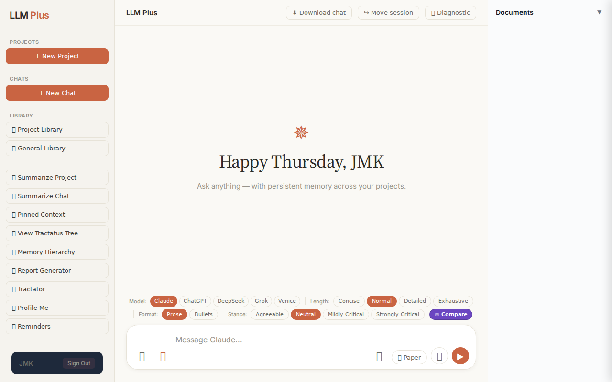

Function 2 — Projects list
Confirm sidebar project count equals GET /api/projects count
R1 approach: navigation
R1 reasoning: Reconcile UI render with backend list
R1 input (verbatim):
App page text after:
LLM Plus PROJECTS + New Project CHATS + New Chat LIBRARY 📂 Project Library 📚 General Library 📝 Summarize Project 📄 Summarize Chat 📌 Pinned Context 🌳 View Tractatus Tree 🧠 Memory Hierarchy 📜 Report Generator 🔮 Tractator 👤 Profile Me 📌 Reminders JMK Sign Out LLM Plus ⬇ Download chat ↪ Move session 🧪 Diagnostic ✵ Happy Thursday, JMK Ask anything — with persistent memory across your projects. Model: Claude ChatGPT DeepSeek Grok Venice Length: Concise Normal Detailed Exhaustive Format: Prose Bullets Stance: Agreeable Neutral Mildly Critical Strongly Critical ⚖ Compare 📚 🔬 📎 📝 Paper 🎤 ▶ Documents ▼ 🔍 Fact-Check Audit × Select text and click Audit to fact-check claims.
Network calls
| method | path | status | ms | response excerpt |
|---|
SSE events observed (0)
(none)
Judge critique
(judge returned no JSON; raw text included)
Screenshots
